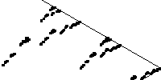
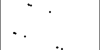
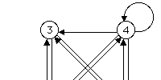
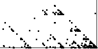

| A natural question, as far as we know first posed by
Ian Stewart,
is |
| What picture does the Random Algorithm
generate if the driving sequence is not random? |
| After studying examples of the pictures produced by different sorts of nonrandom
sequences, we use this rough visual vocabulary to detect patterns in real data. |
| Because we
use a data sequence to select the order in which the transformations are applied, we
call this approach driven IFS. The data drive the
order in which the IFS rules are applied. |
|  |
Stewart's examples are the first instances of
driven IFS. |
 |
Square functions The rules we
shall use for driven IFS |
 |
DNA sequences The rules need not be labeled 1, 2, 3,
and 4. Any four labels will do. "Homer," "Marge," "Bart," and "Lisa,"
for example. Or perhaps C, A, T, and G. What experiments does this suggest? |
|  |
Cyclic driven IFS What happens if we drive an
IFS in a repeating pattern? |
|  |
Driven IFS with forbidden combinations
Gaps in the driven IFS picture indicate combinations of transformations that do not occur. |
|  |
IFS driven by data What can driven IFS tell us about
patterns in measured data? |
|